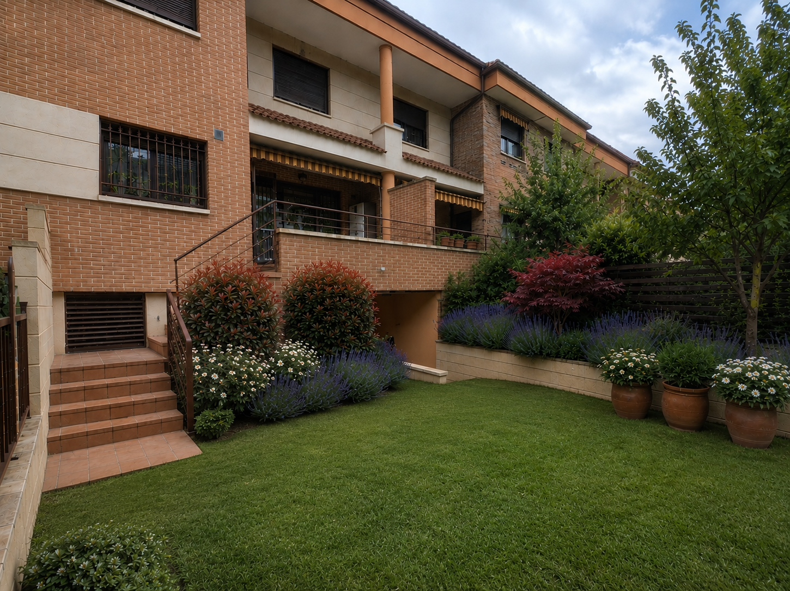

Mantenimiento periódico
Siega, poda, riego y limpieza con visitas programadas. Usted no tiene que preocuparse de nada.
Jardinería, arboricultura y prevención de incendios en Zaragoza y alrededores. Para chalets y fincas rústicas, nos ocupamos de todo: desde la solicitud de autorizaciones hasta la retirada de los restos.

Gestión completa: usted se despreocupa. Nos encargamos de todo el proceso —desde la solicitud de autorizaciones y licencias hasta la retirada de los restos, cuando es necesario— para que no tenga que hablar con nadie más.
Jardín, arbolado y fincas rústicas, de forma periódica o puntual.
Siega, poda, riego y limpieza con visitas programadas. Usted no tiene que preocuparse de nada.
Instalación y mantenimiento de sistemas de riego para que su jardín esté siempre a punto.
Plantación, césped nuevo o rediseño de zonas del jardín, adaptados a su chalet.
Poda de formación, sanitaria y en altura con técnica de escalada, para el cuidado integral de su arbolado.
Apeo dirigido de árboles junto a viviendas, muros o tendidos, con todas las garantías de seguridad.
Desbroce de fincas rústicas y parcelas para reducir el riesgo de incendio y mantener el terreno limpio y en regla.
Cuando surge un imprevisto y no puede esperar, intervenimos con rapidez. Avísenos y priorizamos su caso el mismo día siempre que es posible.
Un mismo interlocutor de principio a fin, sin call centers ni intermediarios.
Poda en altura y talas con técnica y equipo de seguridad, protegiendo su casa y su arbolado.
Sin sorpresas: le explicamos qué se hace y cuánto cuesta antes de empezar.
Trabajamos en Zaragoza capital y en las urbanizaciones y chalets de los alrededores. Si no está seguro de si llegamos a su zona, pregúntenos sin compromiso.
Cuéntenos qué necesita y le preparamos un presupuesto sin compromiso.
O, si lo prefiere, escríbanos desde el formulario de contacto; le respondemos por correo.
Calle Riglos 9, 50012 Zaragoza (España)